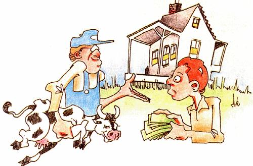
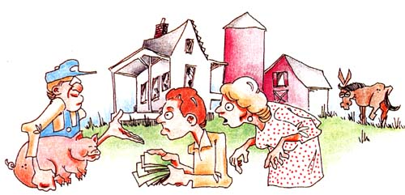
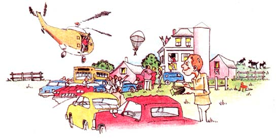

Well, sir, the other day MOTHER-reader Pete Manzolillo was going through a box of old books, and he found the November 1940issue of the American Mercury. (It was headlined, "Farley for President! The Mercury Presents Its Candidate for 1940. ") The inquisitive Mr. M. found one essay in that dusty old magazine-"written by an ex -farmer" funny enough to send along to us. And we liked it so much that, for the first time ever, we're going to let "Last Laugh" eat up more than one page just to get it all in. So sit back for a piece of rural wit that, somehow, seems just as appropriate today as it did 49 years ago.
I USED TO BE A TIMID THIN MAN.I never got on very well in the city. When I was talking to people, they tended to drift away, or they turned to someone else and said, "Having nice weather, aren't we?" I didn't see in my job any of the heroic aspects my superiors were always glorying in, so probably I wasn't very good at it. For a while I turned to poetry and wrote a beauty about the song of the hermit thrush, but everybody in the office thought it was la-di-da. I didn't like noise or smoke or subways or hurrying or playing golf or getting drunk Saturday nights, so I began to think there must be something wrong.
I went to a psychoanalyst who told me I disliked everything too much. For this I took a great dislike to the psychoanalyst. I refused to pay five bucks for this new hate, and the psychoanalyst ended by hating me. So I decided to Get Away From It All-to move from the city to the great quiet of the country and simplify my life. I bought a farm far up in New England, and I bought a cow, too. I had always wanted to own a cow and watch it cropping my grass while I dreamed the days away.
At five o'clock the first afternoon I went to the pasture to milk my cow among the daisies and buttercups. The flies seemed to bother her a lot, and she wrapped her tail around my face three times with a loud crack. A good deal of milk went up my sleeves and over my knees, but there remained an additional two gallons in the pail. When I had achieved this result, the cow placed one hoof in the bucket, turned it over and walked thoughtfully to a patch of clover.
The next day I hitched her in the barn for milking, and the gave two pailfuls and I didn't know what to do with it. One of my farmer neighbors suggested I get a pig, make butter of the cream, and raise the pig on the skimmed milk. This idea fitted in very well with my simple plan for a simple life. I would be a self-sustaining unit in the good old-fashioned way. So I bought a pig. I also bought a cream separator, a churn and a cream can, a butter worker and some wooden paddles, besides numerous buckets.
I discovered promptly that making butter was a terrific job. The neighbors, however, told me a man couldn't make butter the way a woman could, and that I ought to have a wife. There was nothing else to do; I got myself a wife right off.
She said she'd have to have some ice to cool the cream if she was going to make butter, and that we really should have running water, because washing the separator was a great chore. Consequently I laid in a pipe to a spring, and blasted tons of rocks out of the ditch in order to lower the pipe so that it wouldn't freeze in winter. When my hired dynamiter had blasted two windows out of the house, I decided the ditch was deep enough. While painting the new window sash and puttying the new panes, I decided it was wonderful what a man's hands can teach him if he's not too far sunk in the decadence of civilization. I felt there was a certain nobility in what I was doing: learning by trial and error, learning as the cavemen learned, as the Race Has Always Learned.
The water ran fine for two weeks and then the spring dried up. So I put in a pump from a spring lower down, but the water was hard as a brick and plugged the pipes with lime. Nevertheless, I soon learned to take the pipes apart and knock out the lime deposits, and my wife said it was wonderful how handy I was getting to be. She didn't know the half of it. I had torn the pump apart four times in the first week.
Sifting some dirt to recapture a little brass screw that I had dropped, I couldn't help reflecting that the ramifications of a cow's influence were extensive indeed. My red-and-white bovine had already led me to the matrimonial altar, forced me to undertake a course in blasting, taught me something of geology, made me a pig raiser, a glazier, a plumber and now a combination garage mechanic and miner.
ABOUT THIS TIME, I FOUND I'D HAVEto get some hay into the barn to winter my cow. This necessitated a hand rake, grindstone, whetstone and scythe, and also brought a bill of $20 for a man-with-team, the loss of some 10 gallons of sweat, and another bill of $10 for beer. Meanwhile the garden was growing full of witchgrass, and the woodchucks wouldn't eat any of it, though they did raze the peas and beans, and the cutworms leveled the cabbages. I set to work in the garden and was very busy. The summer passed and I never once spent a minute watching my cow crop the grass while I dreamed the days away.
This pastime, however, was undertaken vicariously for me by a number of former friends from the city who came and lolled in the shade and told me what an idyllic life I had and how they envied me. They knew a lot about birds and flowers, and they told me what a beautiful view there was from the mountaintop yonder. I would have liked to find out more from them about the country around my home, only I had to put a new roof on the barn because after the rain had leaked in on my hay, the cow wouldn't eat it.
Winter was almost upon me by the time I had finished the roof and built my new icehouse. I had always loved to watch the seasons fade into one another and see the leaves turn red, and the first snow, and all the rest of it. But now I felt like a man running through a railway tunnel with a locomotive behind him. I had to cut wood like mad in order to keep warm. I also had to buy a new ax, a saw, some wedges, a sledge, mittens, boots and a pair of snowshoes. I already had so much gear piled in the woodshed there wasn't room for more, and so I had to keep my snowshoes under the bed. This made my wife mad. But I said I was damned if I was going to build a snowshoe house, and that was that.
It wasn't long, of course, before I slashed my foot with the new ax. While I was resting in bed, studying the Department of Agriculture pamphlets on how to raise bees, caponize roosters, install cement floors in stables and build henhouses, I decided it was silly to work day and night for the sake of one cow. I decided I would buy some more cows, now that I had a new separator and pump and icehouse and cream can and so many buckets. After all, two cows can live as cheaply as one.
So, when spring came, I bought six cows and seven pigs. I soon found, however, that my pasture wasn't big enough for seven cows and that I'd have to clear some of the scrub. And the fences were down everywhere. I had to go into the woods and cut 500 cedar fence posts. And then I spent the spring dodging loops of barbed wire that chased me up and down and coiled round me like the tentacles of an octopus.
It was now apparent that I'd have to plant a lot of crops to feed my seven cows over the winter, and this entailed buying a team, a plow, harrows, a wagon, harness, corn planter, cultivator and various other implements. It also entailed feeding and watering the horses twice a day for the next 50 years, or however long they lived, or however long I lived.
That summer even more city people came to see our farm; it seemed we were a realization of their dream, a crystallization of their longing for a place in the country. My wife was busy with the canning and the garden and the butter making and the house and the pullets, and God knows I had enough to do without sitting and listening to the city people tell me what an idyllic life I had and how they envied me. But I didn't notice any of them grabbing a hayfork and pitching in.
When my crops began to grow, I realized I'd have to have an addition on the barn for storing them, so I set to work on that. By the time it was finished, I had collected so many tools I had to build a toolshed to put them in. My hogs were big and it was time to butcher them. I decided I'd buy some more tools and go ahead and learn to butcher. Hadn't I already become something of a carpenter, plumber, blacksmith, painter, lumberjack, tinsmith, mechanic and veterinary? Well, it was a bloody job, but I had learned not to think, which is very useful.
My cows commenced having calves. I couldn't bring myself to kill them, so I had to feed them, which was worse. I fought rats, thawed frozen pipes, fixed machinery, cut ice, cut wood and performed prodigies of midwifery for my cows. Occasionally I recalled with awe a vision of myself sitting on a boardinghouse porch with nothing to do, thinking life was a vacuum.
And thus I sank into a bog of work from which I emerged but rarely for 15 minutes late Sunday afternoons, just before chores. I kept it up for five years, and then I began figuring and found I was losing $500 a year on an investment of $8,000, coupled with 15 hours of toil per day.
That was the year I didn't get the storm windows on until March, and in April my wife wanted them off again. I said, "To hell with it!" I said, "Pitch a flatiron through them if you want air." And I put on my best suit and took the train for the city.
When I got to the city, it smote me in the face, and I knew right away that I didn't like it any better than before. I walked right past the psychoanalyst's door, however, without going in. Yet soon I felt so lonely I thought I'd look in at the office and see the boys. Maybe I'd ask for a job again. But they wouldn't want me. My face was like cordovan leather, and I had calluses on my palms like warts.
It began at the reception desk when Miss McEvoy came out and shook hands. "Why, where have you been?" she cried. "I'd hardly know you. You're positively bronzed."
"I've been on a farm," I said. "I'm a farmer now."
"A farmer! Oh, you always were lucky. And here I am at the same old desk. Well, I suppose you want to see Mr. Stewart."
In the president's office, Mr. Stewart said, "Why, how you've grown, how well you look! A farmer, eh? Master of your own time, down to the city for a spree. Y'know, I've always wanted to break away and have a little farm in the country." He shook his head sadly. "And a cow maybe . . . . But I guess I haven't the courage. Say, Blinks will want to see you." And he pushed the buzzer.
Blinks came in. "Boy, put 'er there!" he said. I didn't think I was squeezing very hard, but Blinks howled. "For heaven's sake don't crush my knuckles. Stewart, the fellow doesn't realize his strength. Take a look at this mitt, look at those calluses."
Mr. Stewart ran a fingertip over them, awestruck.
Soon there were three more men in the office. One of them put a hand on my arm and asked shyly, "Let me feel your muscle." I flexed my arm and the chap's eyes gleamed with envy. "Hard as nails," he said, and they all nodded their heads.
"You chop down big trees, I suppose," said Mr. Stewart.
"Pretty big," I said. "I cut my foot with the ax once when I was new at it."
Finally, there wasn't any way out of it but for me to take off my shoe and show them the scar, and roll up my trouser leg and exhibit the two white marks the horse's calks had left. This was so much of a climax that I thought I'd better leave before the spell was broken. They all wanted to take me out to dinner, but I told them to come up to the farm in August instead for a big blowout: "golden bantam picked just 20 minutes before, clotted cream, wild berries, home-cured ham." And then I tore myself away, feeling very airy.
IN AUGUST THE OFFICE WORKERScame out to the farm, and I met them at the station with a load of hay. I let them fish the brook and pick berries and chop down all the trees they wanted to. I also showed them the actual horse that had kicked me.
The following winter they came again, bringing more pals with them to see the snow. And so, as time went on, my farm became a mecca for businessmen whom I allowed (at $6 a day) to play around with hatchets, provided they remembered that once in the house they mustn't whittle furniture. The chairman of the board of the Amalgamated Gas Corporation was the worst one for whittling, but he paid extra for the privilege, so we let him go ahead.
More and more came the next summer, and I hired two maids for my wife, and I didn't do a thing except play with my paying guests and teach them to shoot woodchucks and make wooden whistles. Most of them were pretty well behaved and spent their time jumping in the hay and practicing milking, hiding in the corn, going about naked, and teaching a cow to kick.
Now that I have two hired men and don't personally delve in the fruitful earth for simple fare, or cut my fuel in the winter woods, or scythe the lower meadow in summer dawns while the dew is on, or roam the hills at sunset looking for the cows, or feed the horses, I have become quite famous as a genuine Nature Man and Woods Dweller.
And last year I installed an oil burner, a chauffeur with station wagon, a home electrical plant and three new bathrooms to take care of my paying admirers who come on reverent pilgrimages. You should hear them saying wistfully, "Oh, how I'd like to break away and live the simple life like you do."
|
 |
 |
 |